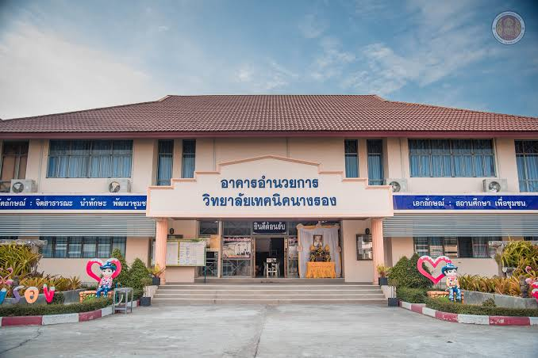
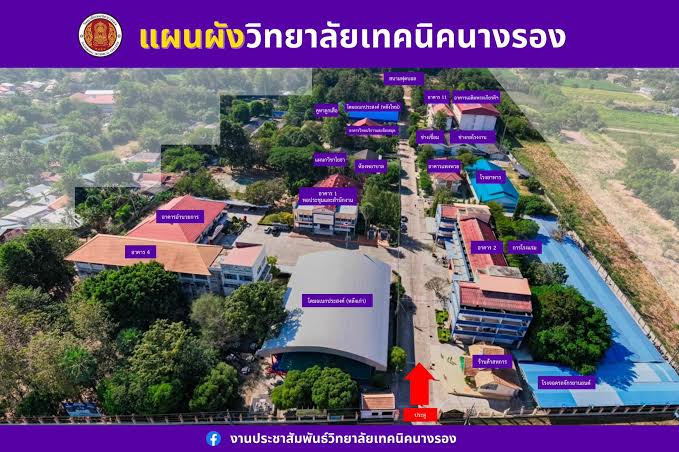

หน้าแรก/ทำเนียบอาคาร
BUILDING · NANGRONG TECHNICAL COLLEGE
ทำเนียบอาคาร
รวมข้อมูลอาคารและพื้นที่เรียนรู้สำหรับเว็บไซต์วิทยาลัย
BUILDING DIRECTORY
อาคารและพื้นที่ภายในวิทยาลัย
ภาพอาคารอำนวยการมาจากไฟล์ต้นฉบับ ส่วนชื่อพื้นที่อื่นเป็นรายการตัวอย่างที่สามารถเปลี่ยนเป็นรายชื่ออาคารจริงได้
ภาพประกอบตัวอย่าง
ภาพประกอบตัวอย่าง
ภาพประกอบตัวอย่าง
ภาพประกอบตัวอย่าง

ต้องการดูตำแหน่งภายในวิทยาลัย? เปิดหน้าแผนที่ภายในวิทยาลัย →